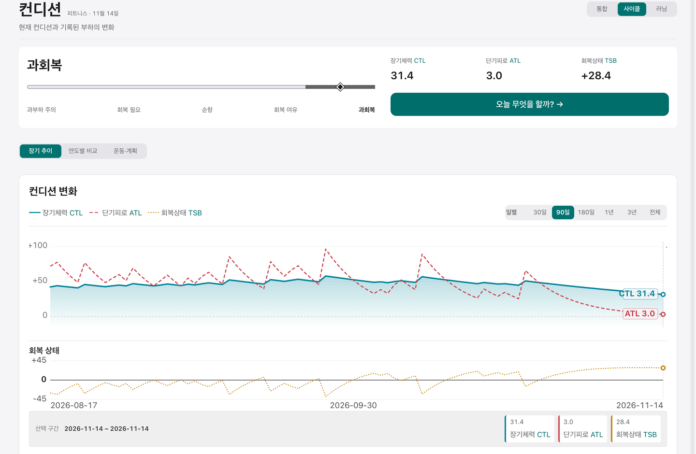
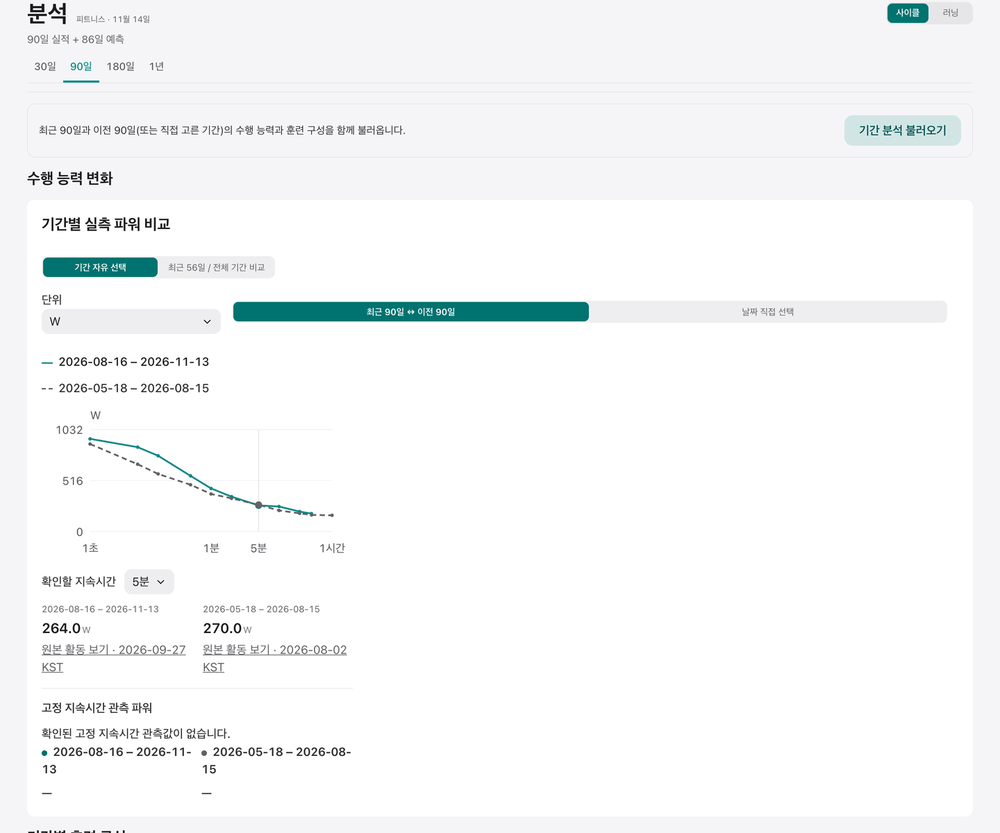
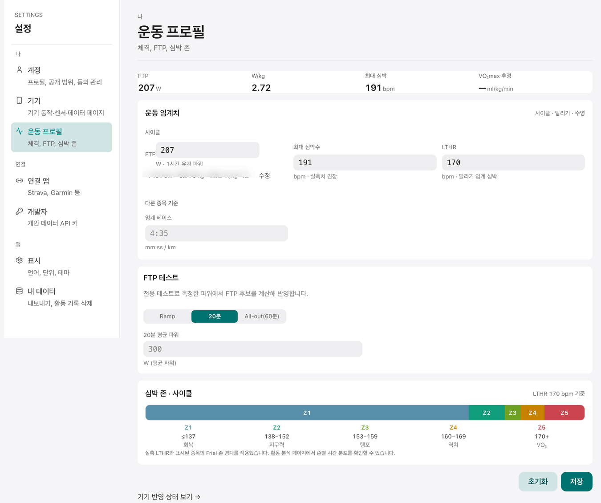

6. 컨디션·체력 — 코치 > 컨디션·분석
이 장에서 할 수 있는 것
- 코치 > 컨디션에서 지금 훈련 상태(과부하 주의 ~ 과회복)와 장기체력 CTL · 단기피로 ATL · 회복상태 TSB를 읽습니다.
- 코치 > 분석에서 기간을 골라 파워 커브(러닝은 페이스)로 수행 능력이 어떻게 바뀌었는지, 기간별 훈련 구성은 어땠는지 봅니다.
- "가정값" · "낮은 근거" · "데이터 부족" 표시의 뜻을 알고, 훈련 기준값(FTP · 임계 페이스 등)을 설정 > 운동 프로필에서 바로잡습니다.
6.1 컨디션 읽기 — 오늘은 훈련해도 될까

따라 하기
- 위쪽 메뉴 코치 > 컨디션 탭을 엽니다. 제목은 "컨디션", 부제는 "현재 컨디션과 기록된 부하의 변화"입니다. 진행 중인 목표가 있으면 부제 옆에 "목표 날짜 · 계획 보기 →" 링크가 붙습니다.
- 오른쪽 위 종목 탭에서 통합 · 사이클 · 러닝 중 하나를 고릅니다. 통합은 종목을 합친 값입니다(8.4).
- 맨 위 카드에서 지금 훈련 상태 이름(예: "순항")과 그 아래 다섯 칸 막대에서 내 위치를 봅니다.
- 오른쪽 세 숫자(장기체력 CTL · 단기피로 ATL · 회복상태 TSB)를 봅니다.
- 카드 아래 오늘 무엇을 할까? →를 누르면 코치 > 계획/기록의 훈련 계획이 열리고, 맨 위에 오늘의 다음 운동이 보입니다(7.2).
세 숫자 읽는 법
| 숫자 | 쉬운 뜻 | 읽는 법 |
|---|---|---|
| 장기체력 CTL | 최근 약 6주 동안 쌓인 훈련량 | 천천히 오르면 체력이 쌓이는 중입니다. |
| 단기피로 ATL | 최근 약 1주의 훈련량 | 최근에 세게 했으면 빠르게 오릅니다. |
| 회복상태 TSB | CTL − ATL | 음수면 피로가 쌓인 상태, 양수면 회복된 상태입니다. |
훈련 상태는 다섯 단계입니다
| 상태 (막대 순서) | 뜻 |
|---|---|
| 1. 과부하 주의 | 피로가 많이 쌓였거나 훈련량을 너무 빠르게 올리고 있습니다. 쉬는 날을 넣어 보세요. |
| 2. 회복 필요 | 부하가 꽤 쌓였습니다. 가벼운 날을 하나 넣으면 좋습니다. |
| 3. 순항 | 몸이 훈련을 잘 흡수하고 있습니다. 지금 리듬을 유지하세요. |
| 4. 회복 여유 | 피로가 낮아 회복 여유가 있습니다. 몸 상태를 확인해 계획한 훈련을 고르세요. |
| 5. 과회복 | 오래 쉬었습니다. 가볍게 훈련을 다시 쌓아 보세요. |
6.2 컨디션 변화 차트 — 추이 보기
- 코치 > 컨디션에서 맨 위 카드 아래 컨디션 변화 영역을 봅니다. 위쪽에서 장기 추이 · 연도별 비교 · 운동·계획 중 보기를 고릅니다.
- 장기 추이에서는 30일 · 90일 · 180일 · 1년 · 3년 · 전체 중 기간을 고릅니다. 30일·90일은 일별, 180일·1년은 주평균, 3년·전체는 월평균으로 묶어 그리며, 기간 버튼 앞에 그 단위가 적혀 있습니다.
- 위 그래프의 실선은 장기체력 CTL, 점선은 단기피로 ATL이고, 아래 따로 붙은 그래프가 회복상태 TSB입니다. 그래프를 누르면(키보드는 좌우 방향키) 선택 구간 줄에 그 날짜의 CTL · ATL · TSB가 나옵니다.
- 연도별 비교에서는 연도 칩을 골라 해마다 월별 체력을 겹쳐 봅니다.
- 운동·계획에서는 체력·피로·회복 상태 선과 함께 활동 표시를 보고, 목표가 있으면 "예측 · 계획 100% 수행 시" 점선으로 목표일까지의 예상을 봅니다.
| CTL 모양 | 뜻 | 할 일 |
|---|---|---|
| 천천히 오름 | 체력이 쌓이는 중 | 지금 훈련량 유지, 회복 챙기기 |
| 평평함 | 같은 자극에 익숙해짐 | 강도나 양을 조금 바꿔 보기 |
| 가파르게 오름 | 과훈련 위험 | 회복 주간 넣기 |
| 내려감 | 쉬는 중이거나 훈련이 줄었음 | 계획한 휴식인지 확인 |
차트 아래에는 다음 영역이 차례로 펼쳐져 있습니다.
| 영역 (화면 이름) | 보이는 것 |
|---|---|
| 최근 7일 부하 한 줄 | "최근 7일 훈련부하가 이전 7일보다 N% 높습니다"처럼 지난주 대비 변화. 빠진 날이 있으면 변화율 대신 그 사실을 알려 줍니다. |
| 최근 활동이 남긴 영향 | 최근 활동 목록에서 하나를 고르면 그 활동이 CTL·ATL·TSB를 얼마나 바꿨는지 보입니다. 이 활동의 순기여(그 활동만 없었다면과 비교)와 하루 상태 변화(전날 마감값과 비교)로 바꿔 볼 수 있고, 이 라이딩의 전체 분석 보기로 활동 상세 분석을 엽니다. "일일 정본 부하"는 그날 확정된 부하로 계산했다는 뜻, "같은 날 활동에 비례 배분한 추정"은 하루 합계를 활동별로 나눠 추정했다는 뜻입니다. |
| 목표 요약 (목표가 있을 때) | 목표일 CTL · 목표일 TSB · 계획 준수율과 계획 보기 → |
| 계획 적응 안내 (필요할 때만) | 최근 계획 실행률이 크게 떨어졌을 때 한 줄 안내. 누르면 훈련 계획으로 갑니다(7.3). |
| 일별 운동 부하 | 최근 6주 일별 TSS 막대(휴식 · 가벼움 · 운동 · 고부하 · 대회급)와 최근 7일 관측 부하 · 최근 42일 주평균 부하 · 연속 휴식일 |
6.3 분석 — 파워 커브로 보는 수행 능력 변화

따라 하기
- 코치 > 분석 탭을 열고 오른쪽 위에서 사이클을 고릅니다. 분석에는 통합 탭이 없습니다(통합 상태로 들어오면 사이클로 열립니다).
- 제목 아래 기간 탭 30일 · 90일 · 180일 · 1년 중 하나를 고릅니다. 이 기간이 비교 기간이 됩니다 — 예: 90일이면 "최근 90일 ↔ 이전 90일".
- 기간 분석 불러오기를 누릅니다. 한 번 불러온 뒤 위 기간을 바꾸면 새 기간으로 다시 불러옵니다.
- 수행 능력 변화 묶음의 기간별 실측 파워 비교에서 두 기간의 파워 커브(최근 기간 실선, 이전 기간 점선)를 견줍니다.
- 확인할 지속시간(예: 5분)을 고르면 기간마다 그 시간의 최고 파워와, 그 기록을 낸 활동으로 가는 원본 활동 보기가 나옵니다.
- 아래 기간별 훈련 구성 묶음에서 심박 존 분포 · 파워 존 분포(존별 체류 시간과 비율)를 봅니다.
비교 방식 바꾸기
| 선택 | 하는 일 |
|---|---|
| 기간 자유 선택 (기본) | "최근 N일 ↔ 이전 N일"(위 기간 탭을 따름) 또는 날짜 직접 선택. 직접 선택에서는 기간마다 올해 · 현재까지 · 전체 기간 · 조회 상한 적용 · 날짜 직접 선택을 고르고, 비교 기간 추가로 두 번째 기간을 넣습니다. |
| 최근 56일 / 전체 기간 비교 | 최근 56일과 확인한 전체 기간을 12개 구간 표로 견줍니다(12개 구간 모두 보기). |
| 단위 W · W/kg | W/kg은 분석 계산 당시 프로필 체중 기준입니다. 체중 자료가 없는 기간은 W 값으로 대신 계산하지 않습니다. |
파워 커브 읽는 법
가로축은 시간(1초 ~ 1시간), 세로축은 그 시간 동안 낼 수 있었던 최고 평균 파워(W)입니다. 이 곡선을 PDC(파워-지속시간 곡선)라고 부릅니다. 두 기간의 곡선이 벌어진 구간이 실력이 바뀐 곳입니다.
| 구간 | 재는 것 | 높으면 |
|---|---|---|
| 5초 · 스프린트 | 순간 폭발력 | 막판 스프린트, 짧은 언덕 돌파에 강함 |
| 1분 · 무산소 | 짧고 강한 힘 | 급가속, 짧은 오르막에 강함 |
| 5분 · VO2 | 최대 산소 능력 부근의 힘 | 중간 길이 오르막에 강함 |
| 20분 · FTP | 오래 버티는 힘 | 긴 오르막, 장거리에 강함 |
6.4 데이터 충분도 · 가정값 — 숫자를 얼마나 믿을까
오라이더는 계산에 필요한 기록이 모자라거나, 내가 정하지 않은 값으로 계산했을 때 숫자 옆에 표시를 붙입니다. 숫자를 지어내 채우지 않고 "왜 비었는지"와 "무엇을 하면 채워지는지"를 함께 보여 줍니다.
| 표시 | 뜻 | 할 일 |
|---|---|---|
| 가정값 | 내가 입력하지 않은 기준값(예: 체중, FTP)을 기본값으로 넣어 계산했습니다. 예: "체중을 기본값으로 계산했어요" | 설정 > 운동 프로필(6.5)에서 내 값을 넣거나 내 체중 확인 · 이 기준값 확인을 누릅니다. |
| 가정값 시작값 | 계획·목표의 시작점을 가정값으로 잡았습니다. | 기준값 입력·확인으로 실제 값을 넣습니다. |
| 낮은 근거 | 계산은 했지만 근거가 약합니다. 예: 일부 부하를 심박이나 운동 시간으로 추정했어요. | 실측 기록(파워미터 등)을 더하면 정확해집니다. |
| 데이터 부족 | 계산에 필요한 최소 기록이 아직 없습니다. | 카드에 적힌 남은 요건을 채웁니다. |
| 근거 부족 · 미산출 | 그 항목만 계산하지 않았습니다. 0점이 아닙니다. | 필요한 구간 기록이 쌓이면 나옵니다. |
남은 요건 읽기
잠긴 기능 카드에는 "남은 요건 1개", "계산에 필요한 조건이 N개 남았어요"처럼 남은 조건이 나옵니다. 요건 모두 보기를 누르면 하나씩 볼 수 있습니다.
| 요건 예시 (화면 문구) | 채우는 방법 |
|---|---|
| "실측 파워 기록 — 최소 N개부터 계산을 시도해요 · 지금 N개" | 파워미터로 탄 기록을 가져옵니다(파워 기록 가져오기). |
| "3~20분 최대 노력 구간 — 최소 N개 · 지금 N개" | 다음 라이딩에 5~20분 꾸준한 최대 노력을 넣어 봅니다. |
| "1시간 이상 파워 라이딩 — 최소 N회 · 지금 N회" | 1시간 이상 꾸준히 타는 라이딩을 합니다. |
| "첫 기록 N일째 · N일째부터 컨디션 해석이 정확해져요" | 지금처럼 기록을 이어 가면 됩니다. |
| "체중을 직접 입력하거나 확인해 주세요" | 체중 입력 · 내 체중 확인 |
6.5 훈련 기준값 설정 — FTP · 임계 페이스 · 심박

훈련 기준값은 설정 > 운동 프로필에 있습니다(10장 운동 프로필). 예전 코치 > 컨디션의 "전체 종목 훈련 기준 설정"이나 옛 설정 > 운동 프로필 주소로 들어와도 이곳으로 옮겨 갑니다. 코치 > 분석의 러닝 훈련 기준 설정 버튼도 이곳을 엽니다.
따라 하기
- 설정 > 운동 프로필을 엽니다. 맨 위에 지금 값(FTP · W/kg · 최대 심박 등)이 요약됩니다.
- 최근 활동에서 새 기준값을 찾았으면 최근 활동에서 임계값 갱신 제안이 뜹니다. 전부 적용 · 심박 임계값만 적용 · 무시 중에서 고릅니다.
- 운동 임계치에서 기준값을 넣습니다 — FTP(W, 사이클), 최대 심박수(bpm), LTHR(달리기 임계 심박, bpm), 그리고 다른 종목 기준의 임계 페이스(mm:ss/km, 러닝).
- FTP 아래에는 키·체중이 요약됩니다(체중은 W/kg 계산에 씀). 바꾸려면 수정을 눌러 설정 > 계정에서 고칩니다.
- 사이클은 FTP 테스트(Ramp · 20분 · All-out(60분))에서 테스트 평균 파워를 넣어 FTP 후보를 계산하고 적용할 수 있습니다.
- 심박 존 경계를 확인하고 저장을 누릅니다(초기화는 저장 전 값으로 되돌림).
- 필요하면 아래 기기 반영 상태 보기 →로 휴대폰 앱에 값이 들어갔는지 확인합니다.
FTP · 최대 심박은 웹 설정 > 운동 프로필과 앱 설정 > 주행 설정 > 라이더 프로필 어느 쪽에서 바꿔도 서버가 서로 맞춰 줍니다. 체중은 웹 설정 > 계정에서 바꾸세요(앱에서는 설정 > 내 자전거 > 가상 파워를 켰을 때 '라이더 체중'으로 보입니다). 가장 나중에 저장한 값이 양쪽에 적용되며, 반영까지 잠시 걸릴 수 있습니다. 분석·존·목표 판정은 웹의 운동 프로필 값을 기준으로 계산하므로, 값이 다르게 보이면 웹에서 확인하세요.
6.6 심박 존 — 강도 나눠 보기
| 존 | 이름 | 목적 |
|---|---|---|
| 존 1 | 회복 | 피로 풀기 |
| 존 2 | 지구력 | 기초 체력 — 장거리의 기본 |
| 존 3 | 템포 | 편하지는 않지만 대화는 가능한 강도 |
| 존 4 | 역치 | FTP 근처 — 실력이 크게 오르는 구간 |
| 존 5 | VO2max | 아주 강함 — 짧은 인터벌에만 |
- 긴 라이딩이 대부분 존 2였다면 목적에 맞게 탄 것입니다.
- 인터벌 날에는 존 4~5 시간이 분명히 있어야 합니다.
- 늘 존 3만 많다면 "조금 힘들지만 효과는 애매한" 강도일 수 있습니다. 쉬운 날은 더 쉽게, 강한 날은 더 강하게 나눠 보세요.
6.7 러닝 컨디션 — 거리별 기록과 부하
- 코치 > 컨디션에서 러닝 탭을 고르고 훈련 상태, CTL · ATL · TSB, 컨디션 변화, 일별 운동 부하를 봅니다(읽는 법은 6.1 · 6.2와 같습니다).
- 코치 > 분석에서 러닝 탭을 고르면 거리별 저장 기록(5km · 10km 최고 시간과 날짜)이 나옵니다. 확인된 기록이 없으면 "아직 없어요"입니다.
- 거리 기록·출처와 마일스톤 보기 →를 누르면 내 기록 화면에서 거리별 기록 전체와 원본 활동을 봅니다.
- 지속시간별 최고 평균 페이스에서 최근 28일과 이전 28일을 견줍니다.
- 러닝 분석 준비 카드가 보이면 원본 기록·임계 페이스·심박 구간 자료가 모자란 것입니다. 러닝 훈련 기준 설정으로 기준값을 넣습니다(6.5).
- 사이클도 같이 한다면 컨디션의 통합 탭에서 종목별 부하가 얼마나 차지하는지 봅니다(8.4).
활동 전체의 평균 페이스와 거리별 최고 기록은 다릅니다. 7km 러닝 안에서 5km 최고 구간이 따로 계산될 수 있습니다.
6.8 자주 막히는 점
| 이럴 때 | 확인할 것 |
|---|---|
| CTL이 0이거나 그래프가 비어요 | 부하(TSS)가 잡힌 기록이 아직 없거나, 첫 기록 뒤 날짜가 충분히 지나지 않았습니다(6.4). |
| 파워 커브가 안 나와요 | 파워미터 기록이 있는지. 가상 파워 기록은 실측 계산에서 빠집니다. |
| FTP가 홈에서 "—"로 보여요 | 설정 > 운동 프로필에 FTP가 저장돼 있는지 확인하세요(6.5). |
| 컨디션에 훈련 기준 설정이 없어요 | 설정 > 운동 프로필로 옮겨졌습니다(6.5). |
| 예전 "라이더 능력 3축" · "더 깊이 보기"가 안 보여요 | 분석은 수행 능력 변화와 기간별 훈련 구성만 남기도록 정리됐습니다. 파워 커브는 6.3을 보세요. |
| 오늘·일별 집계의 날짜가 하루 어긋나 보여요 | 설정 > 표시의 일일 기준 시간대를 확인하세요(10.6). 이미 만들어진 지난 기록은 다시 계산하지 않습니다. |
| 숫자가 갑자기 바뀌었어요 | 기준값(FTP 등)을 바꿨는지, 새 기록이 반영됐는지(훈련 부하 반영 대기 · 갱신 대기) |